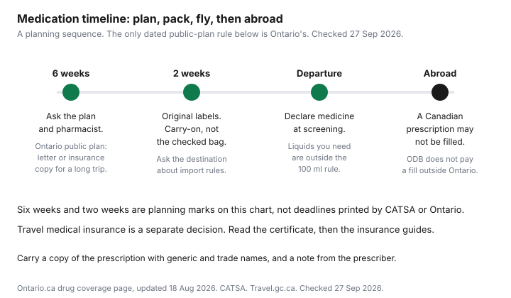

Healthcare · Canada
Travelling With Medication From Canada: Vacation Supplies, Plan Limits and Refills Abroad
Running out of a prescription away from home is a logistics problem with a coverage problem attached. This page is the logistics: how an Ontario public-plan vacation supply works, what the airport screening rules actually say, and why a pharmacy abroad may not fill a Canadian prescription. It is not a travel-insurance comparison. Provincial gaps and certificates are the out-of-province guide and the snowbird guide. Other provinces' public drug pages are not covered, so their day counts are not invented.
Key takeaways
- Ontario's drug-coverage page, updated 18 August 2026, allows one larger supply per Ontario Drug Benefit program year (1 August to 31 July). Under 30 days on hand, up to 200 days. Already at 30 days or more, a 100-day supply.
- You give the pharmacist a letter you can write, for a trip of more than 100 days, or a travel-insurance copy for a trip of 100 to 200 days. You pay the deductible or co-payment on the extra supply. A fill outside Ontario is not an ODB claim.
- The formulary still describes an early refill of up to 100 days and intervention code "MV". Confirm which version the pharmacy system is using.
- CATSA: medication you need may exceed 100 ml, stays out of the 1 litre bag, and is declared to the screening officer. Carry it in the cabin, in the labelled container.
- No workplace-plan day limit and no travel-insurance prescription dollar are listed here. Ask the plan, and read the certificate.
Vacation supplies: plan rules, how often you can get one, and the paperwork
Start with who pays for the drug at home. A workplace plan's vacation clause was not on any booklet checked for this article, so no private-plan day limit is stated.
Ask the administrator whether an early refill is allowed, how often, and whether the dispensing fee is charged again. How to read a drug card, including quantity limits, is the workplace drug coverage guide. The fee on the receipt is a separate line, covered in the dispensing-fee guide.
For the Ontario Drug Benefit, the public page "Get coverage for prescription drugs," updated 18 August 2026, is the consumer rule this article uses. Inside Ontario, a pharmacist can transfer a prescription to another Ontario pharmacy when refills remain, you are not refilling too soon (within 10 days of the end of the supply), and the prescription is not a controlled drug, a controlled-drug preparation, or a narcotic. The page's examples of that last group are oxycodone, Dilaudid, Xanax, and diazepam. Those names are the page's examples, not a suggestion to travel with them.
Outside Ontario, the same page says you may get a larger supply only once during the program year, 1 August to 31 July. If the supply you have is less than 30 days, the travel supply can be up to 200 days. If the supply you have is 30 days or more, you can get a 100-day supply. Give the pharmacist either a letter you write yourself, confirming you are leaving for more than 100 days, or a copy of travel insurance showing you are leaving for between 100 and 200 days. You pay the deductible or co-payment on the extra supply. The page states that prescriptions filled outside Ontario are not covered by the Ontario Drug Benefit. How public plans differ by province, without this travel rule repeated, is the provincial drug plans guide.
The Ontario Drug Benefit Formulary, Edition 43, still carries an older sentence: effective 1 March 1999, a recipient travelling outside the province for at least 100 days may obtain an early refill of up to a 100-day supply, with a letter or a copy of travel insurance, and the pharmacy uses intervention code "MV" when two 100-day claims are submitted the same day. That text does not describe the 200-day top-up on the 18 August 2026 consumer page. Use the consumer page as the current public explanation, and ask the pharmacist which rule the claim system will accept before you leave. The formulary's Trillium paragraphs add quarter limits this article does not restate. If you are on Trillium, read Part VII with the pharmacist rather than assuming the general vacation paragraph covers the deductible quarters.
Packing and screening: CATSA rules for carry-on medication
The Canadian Air Transport Security Authority allows prescription medication and essential non-prescription medication through the checkpoint. Liquid, gel, and aerosol medication you need for the trip may be more than 100 ml.
Those containers do not have to go in the 1 litre bag. You declare them separately to the screening officer. Inhalers and diabetic supplies are permitted. CATSA does not require documents, and you may still present a prescription or a letter if you have one. A 2026 CATSA note repeats the practical point: bring the amount you need for the trip, and declare it at the checkpoint.
Put the medicine in the original container with the pharmacy label, in carry-on luggage, where you can reach it without opening a checked bag. A checked bag can be delayed. The medicine in it is then delayed with the bag. The chart later on this page marks "six weeks" and "two weeks" as a planning sequence. Those marks are not CATSA deadlines and they are not Ontario deadlines.
Controlled drugs and other countries' import rules
Travel.gc.ca, on its page about travelling with medication, says a drug that is legal in Canada can be illegal in another country or can require approval before you arrive. Some medicines are not sold everywhere.
The page's example is epinephrine auto-injectors. Carry a sufficient supply for the trip. Contact the foreign government office accredited to Canada and ask what that country allows you to bring. Keep a list of what you take. Keep the original labelled containers. Carry a copy of the prescription that shows both the generic name and the trade name. A pharmacist can prepare that list. A note from the prescriber helps when a border officer or a local clinician asks why you have it.
The same travel.gc.ca page points to Health Canada's page on travelling with controlled substances. No gram limit, no day limit, and no country-by-country table is copied from that Health Canada page; check it directly. If the medicine is a controlled drug or a narcotic, read that Health Canada page and the destination's rule before you rely on the Ontario transfer exceptions above. Ontario's own page already refuses a pharmacy-to-pharmacy transfer for those prescriptions inside the province. Crossing a border is a stricter question, and it is the destination's law that answers it.
Refills abroad: why a Canadian prescription may not be accepted
A Canadian prescription is an authorization for a Canadian dispenser under Canadian rules. Travel.gc.ca tells you to carry enough medicine because the drug may be unavailable, or illegal, where you land.
It does not say that a pharmacy abroad must honour the Canadian script. Plan on a local prescriber if you need a new fill. Do not build the trip around a cash price in another country. No foreign retail price is listed here, so none is printed.
If the payer at home is the Ontario Drug Benefit, a fill outside Ontario is simply not covered. That sentence is on the 18 August 2026 page. A workplace plan might reimburse an emergency fill after the fact. That depends on the booklet, so no reimbursement percentage is stated. Submit the foreign receipt to the plan when you are home only if the booklet says foreign fills are eligible. The workplace drug guide is where to match that booklet language to the card in your wallet.
What travel medical insurance does, and doesn't, cover for prescriptions
Travel medical insurance is a contract about emergency care away from your home province. Whether it pays for a replacement prescription, a lost suitcase of medicine, or only a drug given during a covered emergency is a sentence in the certificate.
No certificate is quoted here, so no daily drug maximum and no deductible is copied. Read the wording you were issued. Provincial health plans' thin coverage outside the home province is the out-of-province guide. Longer winter stays, including stability rules, are the snowbird guide. The public drug plan and the travel policy are not substitutes. ODB still does not pay the foreign fill. The policy pays only what its prescription clause lists.
A pre-trip checklist
Do the public-plan paperwork before the pharmacy orders a large quantity. Do the border question before you are in the security line. The six-week and two-week marks on the chart are a suggested order of operations for a household, not a statute.
| Task | When | Who | Source |
|---|---|---|---|
| Ask whether a larger supply is allowed, and how often | Before the trip length is fixed. On the chart, about six weeks out, as a planning mark. | Workplace plan administrator. Pharmacist, if the Ontario Drug Benefit applies. | Workplace booklets are not quoted here. Ontario.ca drug coverage, updated 18 Aug 2026: once per program year. |
| Letter, or a travel-insurance copy, for an Ontario public-plan supply | Before the vacation fill. Trip longer than 100 days for the letter. Between 100 and 200 days for the insurance copy. | You write the letter. The insurer's document is the copy. | Same Ontario page. Under 30 days on hand: up to 200 days. At 30 days or more: a 100-day supply. Pay the deductible or co-payment. |
| Labelled containers in carry-on, plus a prescription copy with generic and trade names | About two weeks before departure, as a planning mark, then again the day you leave. | You. Pharmacist can list the medicines. Prescriber can write a note. | CATSA. Travel.gc.ca travelling with medication. |
| Destination import rules, especially for a controlled drug | Before departure. | The foreign government office accredited to Canada. | Travel.gc.ca. No quantity from Health Canada's controlled-substances page is listed here; check it directly. |
| Declare liquid, gel, or aerosol medication at screening | At the checkpoint. | You, to the screening officer. Over 100 ml is allowed when you need it, outside the 1 litre bag. | CATSA medication and medical-item rules. |
| If the supply runs out | Abroad. | A local prescriber. Do not assume a Canadian prescription will be filled. | Travel.gc.ca. Ontario page: a fill outside Ontario is not covered by the Ontario Drug Benefit. |

Sources & date stamps
- Ontario, Get coverage for prescription drugs, updated 18 Aug 2026. Transfer limits inside Ontario, one larger supply per program year (1 Aug–31 Jul), up to 200 days if the current supply is under 30 days, a 100-day supply if it is 30 days or more, the letter or insurance copy, the deductible or co-payment on the extra supply, and no ODB coverage for a fill outside Ontario. Checked 27 Sep 2026.
- Ontario Drug Benefit Formulary / Comparative Drug Index, Edition 43. The early-refill paragraph dated effective 1 Mar 1999: up to a 100-day supply and intervention code "MV". It does not match the 200-day sentence on the consumer page. Confirm with the pharmacist.
- Canadian Air Transport Security Authority, medication and medical items, and liquid or gel prescription medication. Declare medication you need, including amounts over 100 ml, outside the 1 litre bag. Checked 27 Sep 2026.
- Travel.gc.ca, travelling with medication. Legality abroad, epinephrine auto-injectors as an example of a medicine not sold everywhere, labelled containers, generic and trade names, and the pointer to Health Canada. Check the Health Canada controlled-substances page directly. Checked 27 Sep 2026.
- No workplace vacation-supply day limit and no travel-insurance prescription maximum are listed here. Both are omitted.
Frequently asked questions
How do I get a vacation supply of my prescription?
For the Ontario Drug Benefit, the public page updated 18 August 2026 allows one larger supply in the program year from 1 August to 31 July. A current supply under 30 days can be topped up to 200 days. A current supply of 30 days or more can be a 100-day supply. A workplace plan's own day limit is not in any source cited here, so ask that plan, and still pay any Ontario deductible or co-payment the public page requires on the extra supply.
Can I bring my medication on a plane?
CATSA allows prescription and essential non-prescription medication through the checkpoint, including the amount you need for the trip. Liquid, gel, or aerosol medication you need may be over 100 ml and does not have to sit in the 1 litre bag, but you declare it separately to the screening officer. Keep it in the original labelled container, in carry-on, where you can reach it. A prescription copy is not required at screening, and you may still show it.
What if I run out abroad?
A prescription filled outside Ontario is not covered by the Ontario Drug Benefit. Travel.gc.ca says a drug that is legal in Canada may be illegal at the destination, or may not be sold there, and it tells you to carry a sufficient supply. A Canadian prescription is not a promise that a pharmacy abroad will fill it. Read the travel-medical certificate for any prescription benefit, because no insurer payment figure is listed here.
Do other countries restrict my medication?
Travel.gc.ca says a drug that is legal in Canada can be illegal abroad or can need approval before you arrive. It names epinephrine auto-injectors as a medicine that is not sold in every country. Contact the foreign government office accredited to Canada, and carry a list plus a prescription copy with the generic and trade names. Health Canada's controlled-substances page is the official next step, and no import quantity from that page is copied here.
Does travel insurance pay for prescriptions?
Only if the certificate says so. No travel-medical policy wording on prescription fills is quoted here, so no benefit amount is printed. The provincial out-of-province guide and the snowbird guide cover the insurance decision. The Ontario public plan still does not pay a prescription filled outside Ontario.
Researched and drafted with AI assistance and fact-checked against official Canadian sources. How we create content.